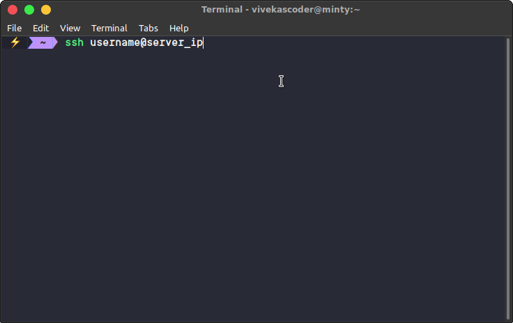
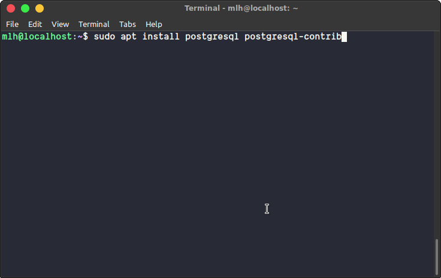
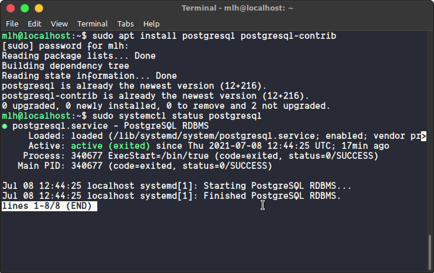
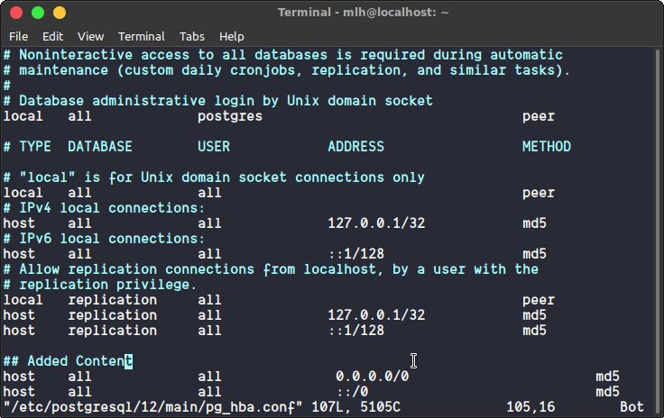
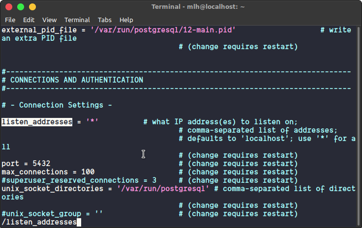

ssh username@server_ip
sudo apt install postgresql postgresql-contrib

sudo systemctl status postgresql

⚠️ If you don't know how to create a virtual machine, you can watch my videos on development using cloud computers on youtube with Development Using Clout Computers
pg_hba.conf file using the following command.vim /etc/postgresql/12/main/pg_hba.conf
host all all 0.0.0.0/0 md5
host all all ::/0 md5

vim /etc/postgresql/12/main/postgresql.conf
listen_address to *listen_addresses = '*'

sudo -u postgres psql
CREATE DATABASE myproject;
CREATE USER myprojectuser WITH PASSWORD 'password';
ALTER ROLE myprojectuser SET client_encoding TO 'utf8';
ALTER ROLE myprojectuser SET default_transaction_isolation TO 'read committed';
ALTER ROLE myprojectuser SET timezone TO 'UTC';
GRANT ALL PRIVILEGES ON DATABASE myproject TO myprojectuser;
\q
settings.py# For PostgreSQL
DATABASES = {
'default': {
'ENGINE': 'django.db.backends.postgresql',
# Name of the database.
'NAME': 'myproject',
# Hostname/DomainName/IP of the server.
'HOST': 'server_ip_here',
# User That you've created
'USER': 'myprojectuser',
'PORT': '5432',
# Password that you've created for the user.
'PASSWORD': 'password'
}
}
psycopg2-binary package with pippip install psycopg2-binary